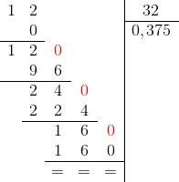

Decimal Numbers
Un numero decimale è una coppia costituita da un numero naturale, detta parte intera, e da una successione di elementi dell’insieme S = {0, 1, 2, ... , 9}, detta parte decimale.
Il valore di una frazione piò essere espresso eseguendo la divisione tra numeratore e denominatore. Il quoziente ottenuto può essere:
un numero intero se il numeratore è multiplo del denominatore;
un numero decimale finito, cioè un numero che presenta dopo la virgola un numero finito di cifre;
un numero decimale illimitato periodico (chiamato semplicemente periodico)
Una frazione che ha come denominatore una potenza di 10, con esponente maggiore di zero, si chiama frazione decimale, e il numero decimale corrispondente si ottiene spostando a sinistra la virgola; Una frazione con denominatore uguale a 100 può anche essere espressa utilizzando la notazione percentuale (con simbolo %, che significa x 1/100).
Una frazione ridotta ai minimi termini genera un numero decimale finito solo se i fattori primi del denominatore sono potenze di 2 e di 5. Quando i fattori primi i fattori primi di una frazione (ridotta ai minimi termini) non sono potenze di 2 e di 5, il risultato è un numero decimale illimitato periodico, ossia un numero che dopo la virgola presenta un gruppo di cifre, detto periodo, che si ripetono indefinitamente. Il periodo si scrive una sola volta soprassengato
a,bcd
Le cifre comprese tra la virgola e il periodo sono dette antiperiodo:
a,bcdefg
dove bcd è l'antiperiodo, e il numero viene detto periodico misto.
Esempio 1.0. Il numero razionale 1/2 si scrive in rappresentazione decimale 0.5;
1/4 = 0.25
1/3 = 0.3333 ... = 0.6
(in questo caso 1 è l'antiperiodo)2/7 = 0.28571428571428... = 0.285714
Conversion of a repeating decimal to fraction
È possibile trasformare un numero decimale nella frazione dalla quale discende; la frazione ottenuta è detta frazione generatrice. Se dobbiamo trasformare un numero non periodico ma decimale limitato 3,25 in frazione dobbiamo eseguire la divisione di 10,100,100, ecc; quindi 325/100.
Esempio 1.1: Si consideri il numero periodico semplice a = 2,333...; moltiplicando il numero a per 10 si ottiene: 10a = 23,33... e quindi 10a − a = 23.333.. − 2.333..; eseguendo la sottrazione la parte decimale si azzera ottenendo 9a = 23 − 2, da cui a = (23 − 2)/9. ■
Esempio 1.2 Si consideri il numero periodico misto b = 2,8333...; moltiplicando il numero per 10 e per 100 si ottiene rispettivamente: 10b = 28.333.. e 100b = 283.333..., quindi 100b − 10b = 283.333 − 28.33 cioè b = (283 − 28)/90. ■
Da questi esempi è possibile ricavare la regola generale:
il numeratore è uguale alla differenza tra il numero intero che si ottiene togliendo la virgola e il numero intero che si ottiene togliendo le cifre del periodo;
il denominatore è composto da tanti nove quante sono le cifre del periodo e tanti zeri quante sono le cifre dell'antiperiodo.
a,bcd = (abcd − a)/999
Per esempio
2.92 = (292 − 2)/99 = 290/99
E, nel caso il numero presenti un antiperiodo:
a,bcdbcd = (abcdefg − abcd)/999000
Per esempio:
1,133 = (1133 − 113)/900 = 1020/900 = 17/15
Esempio 1.1. 0.5 = (5 − 0)/9 = 5/9. ■
Esempio 1.2. 0.135 = (135 − 1)/990 = 67/495. ■
Esempio 1.3. 0.9 = (9 − 0)/9 = 1. ■
From fractions to decimal numbers
Given a fraction doing the division numerator by denominator a decimal number is obtained
So for example 1/7 = 0.142857142857... is a recurring decimal with a patter of six digits 142857.
| Terminating decimals | Recurring decimals | |||||
|---|---|---|---|---|---|---|
| Fraction | 1/5 | 1/25 | 1/200 | 1/6 | 1/9 | 4/11 |
| Equivalent decimals | 0.2 | 0.04 | 0.005 | 0.16̄ | 0.1̄ | 0.36 |
To convert a reapeating decimal to a fraction, let x = decimal number, determine the number of decimal places (digits) that repeat the pattern, and then multiply both sides of the equation by 10, 100, or 1000 (or a higher power of 10), depending on whether 1, 2 or 3 (or more) decimals repeat. For example, to convert 0.7777.. = 0.7̄, we would follow these steps:
Let x = 0.7̄,. Since only 1 digit repeats, we multiply by 10 to get 10x = 7.7̄;
Then subtracting x = 0.7̄ from this equation, we have 9x = 7;
We then divide both sides by 9, the result is x = 7/9.
As another example, we will change the repeating decimal 0.6̄3, to an equivalent fraction.
x = 0.63636363..
100x = 63.636363..
subtracing x = 0.636363.. from the last equation
99x = 63
x = 63/99 = 7/11. ■
Example 3. Convert 2.23̄ into fraction. Let x = 2.23̄
10x = 22.3̄ (2)
100x = 223̄ (3)
Subtract (2) from (3)
90x = 201
With this procedure we can show that 0.9̄ is equal to 1.
x = 0.9̄
10x = 9.999..
subtracing x = 0.9̄ from the last equation
9x = 9
x = 9/9 = 1. ■
Is a whole number like 6 a repeating decimal? Yes. A number is caleld a repeating decimal if it has at least one representation as a repeating decimal. The number 6 is a repeating decimal because it can be written as 6.0̄ or 5.9̄.
Percentage increase
It is the difference between the final value and the initial value, expressed in the form of a percentage.
Variazione % = (xf − xi)/xi ⇒ xf = xi + (Variazione %)xi
Esempio 1. Dieci anni fa il prezzo medio della benzina era di 1,60 euro al litro, mentre quest'anno è di 1,80 euro al litro. Qual è l'incremento percentuale del prezzo medio della benzina negli ultimi 10 anni?
[(1.80 − 1.60)/1.60]% = 12.5%
Esempio 2. L'area di un cerchio aumenta dell 44%. Quale sarà l'aumento del perimentro?
(A2 − A1)/A1 = A1 + 44/100A1 = 1.44 A1
We know that
A2 / A1 = r22 / r21 = 1.44
The percentage increment of the perimeter is
(P2 − P1)/P1 = P2 / P1 − 1 = r2 / r1 − 1 = √1.44 − 1 = 1.2 − 1 = 0.2 = 20%. ■
Proportions
A proportion is an equality of ratios. An equality of ratios is usually expressed by placing four dots between two ratios : thus, 4:2 = 6:3, which indicates that the ratio of 4 to 2 equals the ratio of 6 to 3.
If x = ky, where k is a constant, then we say that x is directly proportional to y. It is written as x ∝ y.
If x = k/y, where k is a constant, then we say that x is inversely proportional to y. It is written as x ∝ 1/y.
Example 1. Having a sum of 180, we want to divide it in three parts proportional to 2, 3 and 4. What's the largest part?
Solution. Let x < 180. The three parts will be such that
a = 2x
b = 3x
c = 4x.
And such that
180 = 2x + 3x + 4x
180 = 9x
x = 20
So the largest part is 80. ■